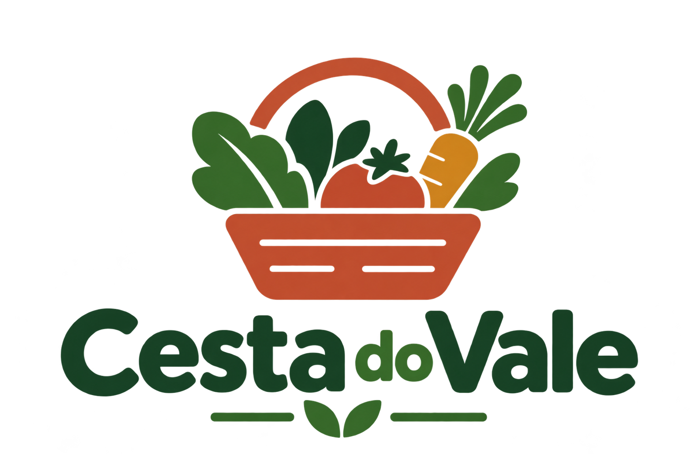

A
Aline, assinante
Tem pouco tempo e usa principalmente o celular. Precisa pedir a cesta da semana, saber o que escolheu e acompanhar o que já foi separado.
Pedido e histórico
O MVP organiza o pedido da semana, protege o acesso de cada pessoa e registra a separação dos produtos.
Tem pouco tempo e usa principalmente o celular. Precisa pedir a cesta da semana, saber o que escolheu e acompanhar o que já foi separado.
Pedido e históricoTrabalha melhor no computador. Precisa ver as cestas da semana, separar os produtos e controlar o limite sem se perder.
Separação e fechamentoAline escolhe cesta pronta ou selecionável e define o tamanho.
O backend grava a cesta vinculada à conta autenticada.
Vanderlei registra produtos e o sistema aplica os limites.
Aline consulta os detalhes e confirma o recebimento.
Pequena, média e grande comportam 5, 8 e 12 produtos diferentes.
O perfil vem da conta autenticada, sem escolha manual no login.
Separação inválida, excesso e acesso indevido são recusados pelo backend.
Mostrar o login compartilhado e a área de pedidos.
Escolher uma cesta pronta, conferir os produtos e confirmar o pedido.
Sair e entrar como Vanderlei para mostrar que a persona vem da conta.
Abrir a cesta, registrar produtos e tentar ultrapassar o limite para exibir a proteção.
Voltar para Aline, abrir os detalhes e confirmar o recebimento.
Quatro áreas do fluxo: pedir, histórico/detalhes, separação e fechamento. O build de produção e o lint foram validados.
ConcluídoRotas, serviços, repositórios, esquemas, banco e migrações organizam as regras de negócio.
ConcluídoArgon2 para senhas, JWT em cookie HttpOnly, controle por perfil e isolamento das cestas.
ConcluídoA suíte automatizada do backend foi executada: 40 testes passaram. A validação publicada ainda depende da URL final e do roteiro no ambiente de entrega.
Validado localmenteEscolha, revisão, criação e histórico.
Registro, limite, desfazer e conclusão.
Aline e Vanderlei com áreas distintas.
Confirmar URL e executar o roteiro no ambiente publicado.
Registrar evidências do fluxo completo com API e banco ativos.
Levar este roteiro e o backlog visual.
Token temporário, redefinição e envio seguro.
Interpretar a cesta e revisar a proposta antes da confirmação.
Reabrir uma composição anterior como novo pedido.
O MVP resolve o problema principal: organizar o pedido e dar ao produtor uma visão confiável da separação.
Mais rapidez para pedir e clareza sobre a cesta.
Mais controle para separar sem ultrapassar o limite.
Uma base segura para incluir IA e recuperação de senha.